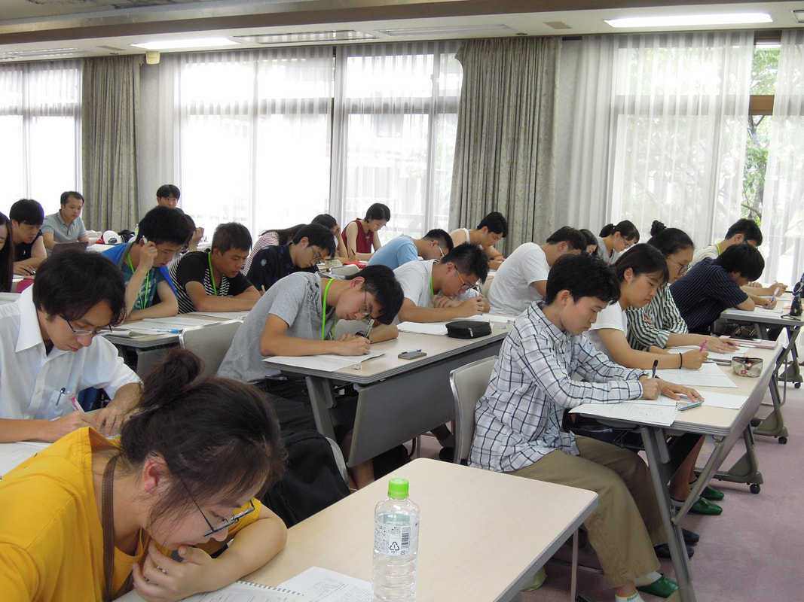
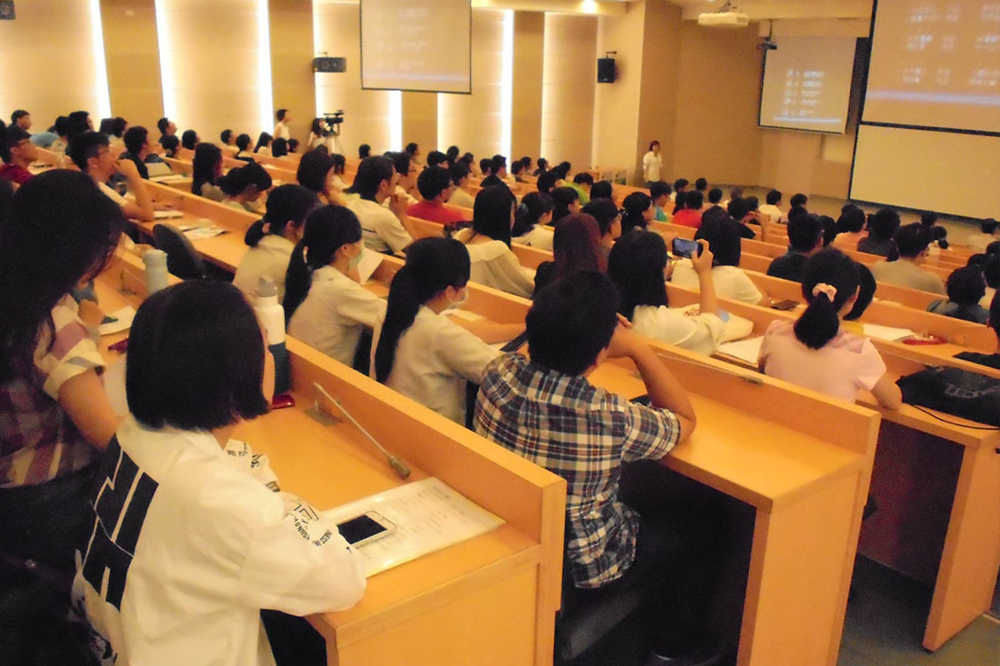
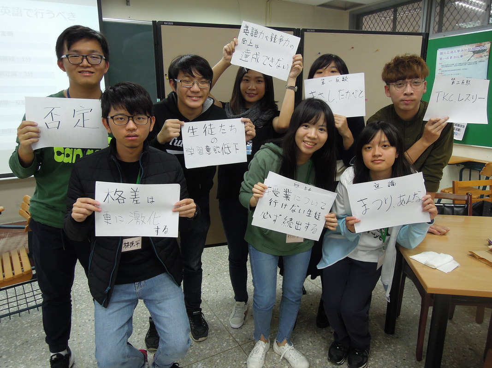

<section class="section" style="border-bottom:none;">
	<div class="container">
		<div class="section-head">
			<span class="eyebrow">Activities</span>
			<h2>活動介紹</h2>
		</div>
		<div style="display:grid;grid-template-columns:repeat(auto-fit, minmax(220px, 1fr));gap:32px;max-width:900px;margin:0 auto;">
			<a href="debate-exchange-camp.html" style="text-align:center;">
				
				<h3>日本語辯論與國際交流營</h3>
			</a>
			<a href="reading-contest.html" style="text-align:center;">
				
				<h3>日語朗讀比賽</h3>
			</a>
			<a href="japanese-dojo.html" style="text-align:center;">
				
				<h3>日本語道場</h3>
			</a>
		</div>
		<div style="max-width:280px;margin:32px auto 0;text-align:center;">
			<a href="other-activities.html">
				
				<h3>其他日語相關活動</h3>
			</a>
		</div>
	</div>
</section>
